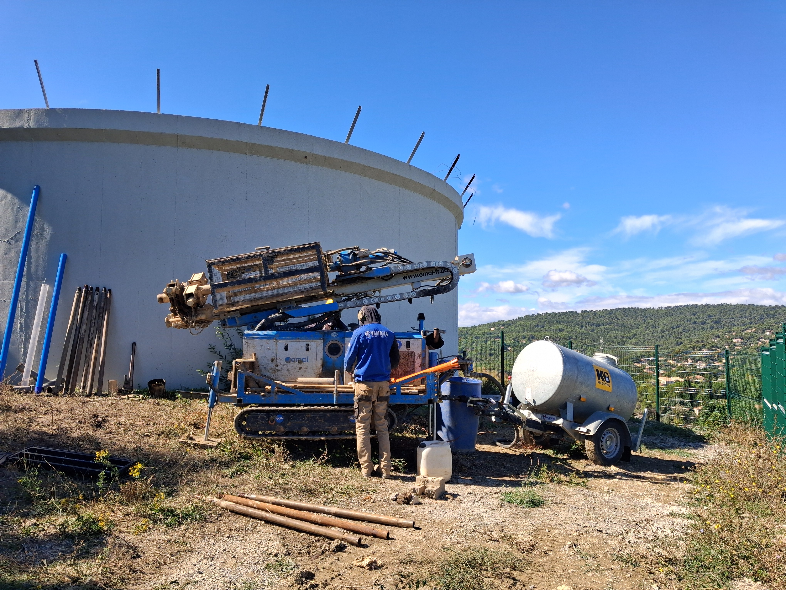
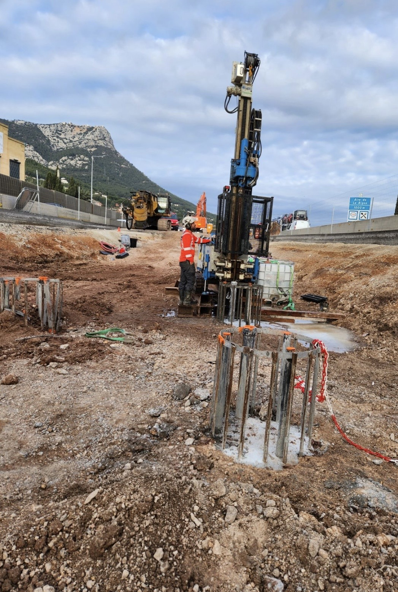
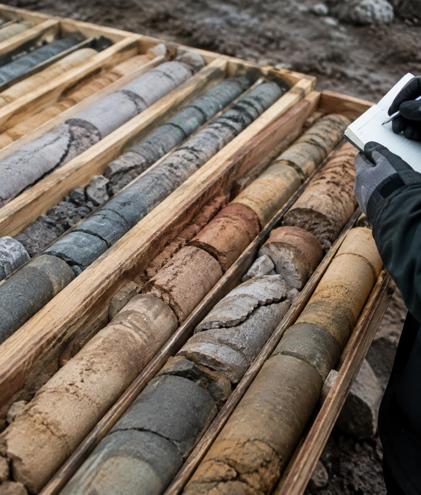
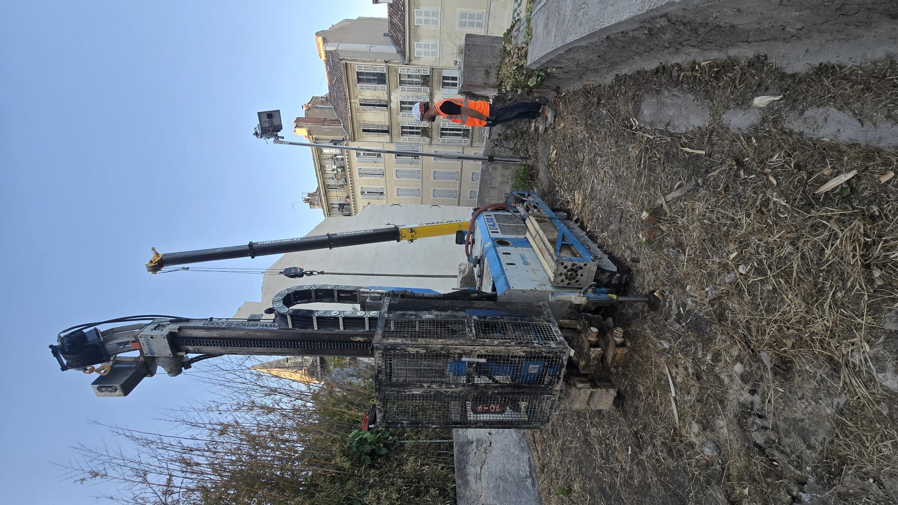
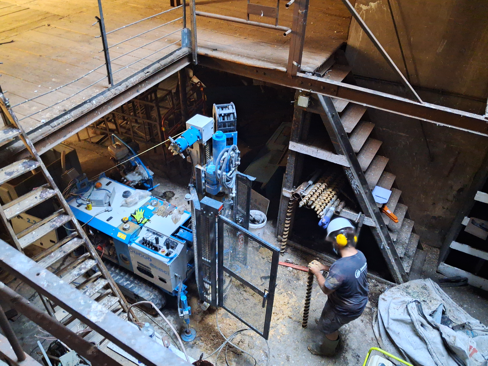
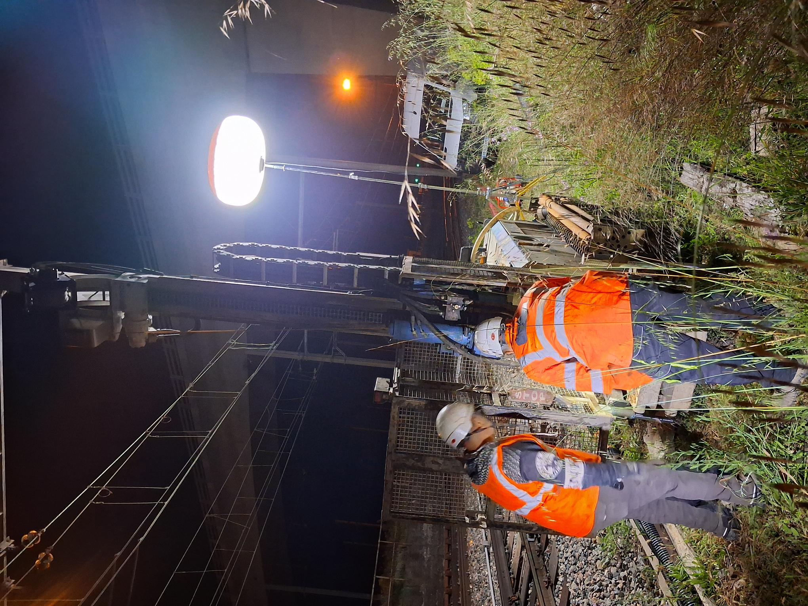

Nos savoir-faire
Ce que nous faisons,
expertise par expertise.
01 · Ingénierie géotechnique
Sols et fondations
Étudier le comportement des sols pour adapter les ouvrages aux caractéristiques du terrain et sécuriser les choix de conception, de réalisation et de dimensionnement.
- Réaliser les études géotechniques de conception et d'exécution (missions G1 à G5).
- Définir les principes de fondation et les niveaux d'assise adaptés au projet.
- Étudier la stabilité des talus, les terrassements et les ouvrages de soutènement.
- Analyser les désordres géotechniques et préconiser des solutions de confortement ou de réparation.
02 · Géologie
Compréhension du sous-sol
Identifier et interpréter les formations géologiques pour comprendre la structure du sous-sol et anticiper les contraintes susceptibles d'affecter un projet.
- Analyser les cartes géologiques, données bibliographiques et études antérieures.
- Identifier les formations superficielles, remblais et terrains rocheux.
- Interpréter les coupes géologiques et les résultats des reconnaissances.
- Identifier les particularités du site et les incertitudes nécessitant des investigations complémentaires.
03 · Investigations géotechniques
Sondages et forages
Mettre en œuvre des moyens de reconnaissance adaptés à la nature des terrains, aux profondeurs recherchées et aux contraintes d’intervention.
- Réaliser des sondages destructifs, carottés et à la tarière.
- Effectuer des essais in situ : pressiométriques, pénétrométriques et essais d'eau.
- Réaliser des fouilles et sondages à la pelle mécanique pour observer et prélever les terrains.
- Équiper les forages et assurer l'enregistrement des paramètres de reconnaissance.
04 · Essais et caractérisation
Laboratoire géotechnique
Caractériser les sols et matériaux prélevés afin de déterminer leurs propriétés physiques, mécaniques et leur comportement.
- Réaliser les essais d'identification : granulométrie, teneur en eau, valeur au bleu et limites d'Atterberg.
- Classifier les matériaux selon le GTR (Guide des Terrassements Routiers).
- Déterminer les caractéristiques mécaniques par essais triaxiaux, cisaillement et œdomètre.
- Évaluer les propriétés de compactage et de portance par essais Proctor et CBR.
05 · Hydrogéologie
Eau et sous-sol
Étudier les eaux souterraines et leurs interactions avec les terrains, les terrassements et les ouvrages, afin d’anticiper les contraintes liées à leur présence et à leurs variations.
- Réaliser des études documentaires et hydrogéologiques du site.
- Installer des piézomètres et assurer le suivi des niveaux d'eau souterraine.
- Réaliser des essais de perméabilité et des essais de pompage.
- Évaluer les niveaux de hautes eaux, les débits d'exhaure et les besoins de rabattement de nappe.
06 · Environnement
Sites et sols pollués (SSP)
Identifier, caractériser et évaluer les pollutions potentielles des sols et des eaux souterraines pour accompagner les projets d'aménagement et de réhabilitation.
- Étudier l'historique du site et identifier les sources potentielles de pollution.
- Définir et réaliser les programmes d'investigations sur les sols, les eaux souterraines et les gaz du sol.
- Organiser les prélèvements et analyses des polluants : hydrocarbures, BTEX, métaux et composés volatils.
- Interpréter les résultats, établir des schémas conceptuels et accompagner le suivi environnemental des chantiers.
Sur le terrain
Des chantiers
à chaque configuration.
Notre matériel et nos méthodes s’adaptent aux contextes les plus variés : sites industriels, ouvrages maritimes, infrastructures, zones difficiles d’accès et interventions en horaires contraints.
 01
01
02
03
04
05 06
06 07
07
08
09Une question sur votre terrain ?
Nous vous aidons à relier votre besoin à la bonne expertise et à un programme d’intervention proportionné.
Parler de votre projet Comprendre les missions G1 à G5